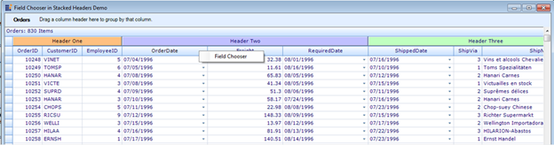
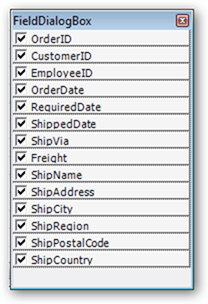
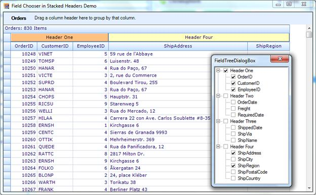

The GridGrouping control in Essential Grid provides field chooser support for stacked headers. The field chooser feature enables you to customize a column in a grid at run time without modifying the database it is bound to.
Use Case Scenarios
When you want to show or hide the columns of a stacked header in a grid without deleting its bound records, you can achieve this using this feature.
Properties
Table 8: Property Table
|
Property |
Description |
Type |
Data Type |
Reference links |
|
EnableColumnsInView |
Used to enable or disable the column names in the field chooser dialog. |
Property |
Boolean |
N/A. |
Constructor
|
Constructor |
Description |
Parameters |
Type |
Return Type |
Reference links |
|
FieldChooser |
Used to wire the GridGroupin gControl with the field chooser. |
(<GridGroupingControl>) |
Constructor |
class |
N/A. |
Sample Link
A demo of this feature is available in the following location:
..\..\AppData\Local\Syncfusion\EssentialStudio\{Installed Version}\Windows\Grid.Grouping.Windows\Samples\2.0\Grouping Grid Layout\Field Chooser in Stacked Header Demo
Adding Field Chooser Stacked Headers In GridGroupingControl
1. To add field chooser, create a constructor using the FieldChooser class and pass the GridGroupingControl as the parameter.
The following code illustrates this:
|
[C#] // wire the GridGroupingControl with the field chooser. FieldChooser fchooser = new FieldChooser(this.gridGroupingControl1); Here is the code snippet used to disable the EnableColumnsInView property.: //disable the EnableColumnsInView property fchooser.EnableColumnsInView = false;
|
|
[VB] 'Wire the GridGroupingControl with the field chooser. Dim fchooser As FieldChooser = New FieldChooser(Me.gridGroupingControl1) 'Disable the EnableColumnsInView property fchooser.EnableColumnsInView = False
|
When the code runs, the entire grid will open.
2. Right click on a column header and select the Field Chooser menu item to view the Field Chooser dialog.

Figure 351: Field Chooser
3. This dialog will list all the column names with check boxes adjacent to them.

Figure 352: FieldDialogBox
4. Select the checkboxes of the columns you want to be displayed in the grid.
5. The grid will have only the columns which are selected in the Field Chooser dialog.

Figure 353: Customized Grid